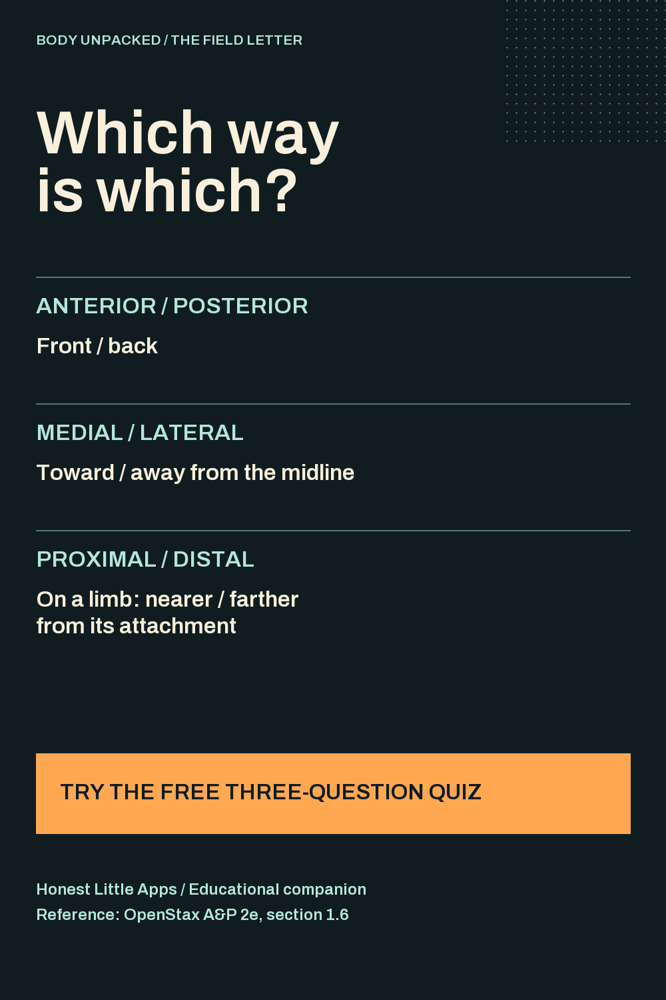
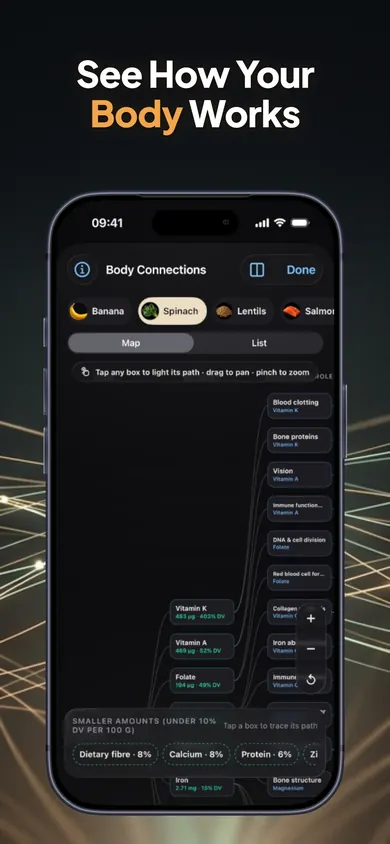

Anterior or posterior?
Which way is which?
Three questions. An explanation after each. Get your bearings before you memorize another body diagram.
Explore Body Unpacked freeiPhone and iPad · iOS / iPadOS 18+
A free learning companion from Honest Little Apps, the app's publisher.
Question 1 of 3 · no timer
The breastbone is ___ to the spine.
Choose one answer. You can review every explanation, even if you get it wrong.


A note for the diagram-flipper.
You turn the page. The next illustration faces the other way. Suddenly the words you thought you knew feel unfamiliar again. That is the situation this little practice page is made for: a beginner pausing over a diagram, not a patient trying to interpret a scan.
Before answering, name the two structures being compared. Read the full sentence aloud. Then choose the term. If you miss a question, stay with the explanation for a moment rather than racing to the next screen.
The reference frame is anatomical position: standing upright, facing forward, with palms forward. Directions describe the person's body, even when an illustration changes viewpoint.
This is a fictional learning scene, not a testimonial. Three questions cannot tell you how much anatomy you know. They are simply a small place to begin.
Keep beside your notes
Your direction card.
Toward the front / toward the back.
Toward the midline / away from the midline.
On a limb: nearer its attachment / farther from its attachment.
Directions express a relationship. Keep both structures in your sentence.
A plain-text sheet. Your quiz answers are not printed or stored.

From words to connections
Keep following your curiosity.
Body Unpacked connects foods, nutrients and body systems in an offline learning app. Explore its atlas, step through physiology models, and check the sources behind explanations.
- Choose a topic that interests you.
- Follow a connection or teaching model.
- Save what you want to revisit in the app.
The current App Store listing describes no account, ads or analytics. It also says the content has not been independently reviewed by a clinician. This is education, not medical advice.
Open Body Unpacked in the App StoreBefore you carry on.
Is this quiz part of the app?
No. This page is an original companion from the publisher. Your answers stay in this browser session and do not sync into Body Unpacked. The app has its own learning activities.
Does a perfect score mean I know anatomy?
No. It means you answered these three questions correctly. There are no age comparisons, ability labels, badges or promises about exam performance.
Is this suitable for a formal anatomy course?
Use it as a short warm-up. Your course materials and instructor remain the reference for your syllabus, terminology and assessment requirements.
Can it explain symptoms or an imaging report?
No. A vocabulary exercise cannot interpret a personal health situation. Ask a qualified professional about your own report or symptoms.
Pick the next step that fits.
If you only came for a quick reminder, print the card and keep it with your notes. Nothing is locked behind a download. If you want broader, connected learning about food and the body on your phone, the app is the next place to explore.
For detailed clinical anatomy, professional training or examination preparation, use resources selected by your course or professional body. Body Unpacked is a general education app, not a replacement for those materials.
One term understood.
One more connection to explore.
You can stop at the card or keep learning. The App Store page shows the app's current features and availability.
Get Body Unpacked freeSources & page notes.
- OpenStax, Anatomy and Physiology 2e, section 1.6: reference position and directional terminology. The questions and learning scene here are original.
- Body Unpacked App Store listing: app features, compatibility and screenshot. Checked November 4, 2026; availability can vary by region.
Published by Honest Little Apps, which publishes Body Unpacked. No independent clinical review of this page is claimed. No signup, health data entry, cookies or analytics are used by this page. Hosting infrastructure may process standard request logs; see the site privacy page.
Useful for someone else?
Share the public guide. Your entries and results are not included.
Open the public guide link